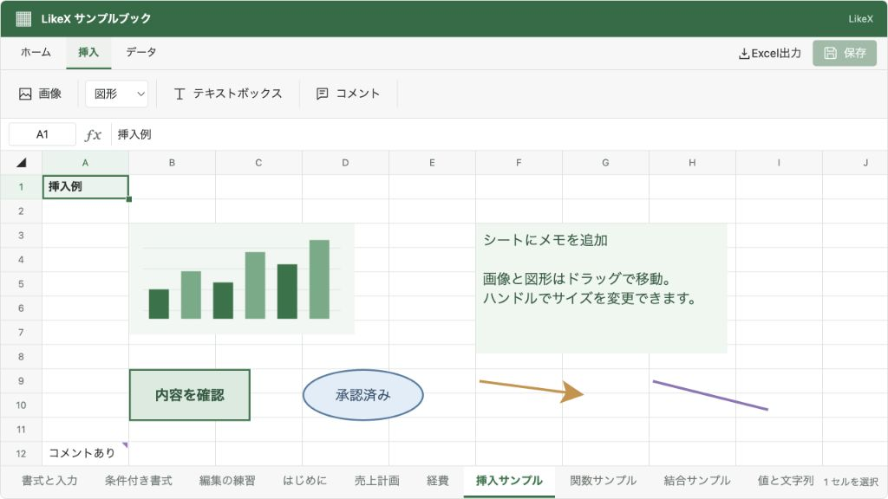

@likex/spreadsheet
画像・図形・コメント
画像、文字入り図形、テキストボックス、セルコメントを挿入し、JSONに保存します。
画面例を見る ↓ヘッダーの「ホーム」でセルを編集し、「挿入」で画像・図形・テキストボックス・コメントを追加します。保存・Undo／Redoはセルと挿入オブジェクトに共通です。
画面の操作#
| 対象 | 操作 |
|---|---|
| 画像 | PNG・JPEG・WebP・GIFをローカルから選択し、選択セルの位置に挿入。ドラッグで移動し、現在の表示枠の縦横比を保ってサイズ変更。 |
| 図形 | 長方形・楕円・直線・矢印を挿入。位置・サイズ・塗り・線と、図形内の文字を編集。 |
| テキストボックス | セルと独立した複数行テキストを挿入。文字色・背景・文字サイズ・太字を編集。 |
| コメント | 選択セルに追加。セルの印から開き、内容の編集・削除が可能。1セルにつき1件。 |
選択したオブジェクトはDelete / Backspaceで削除できます。ドラッグ中のEscapeで移動・サイズ変更を取り消します。コメントは返信スレッドやユーザー認証を持たないセルの注記です。author は必要に応じて親側で指定できます。
図形・テキストボックスはダブルクリック、または選択後のEnterで文章を編集します。改行も入力でき、外側をクリックすると確定、Escapeで取り消します。図形の文字は中央に配置し、設定パネルで文字サイズ・文字色・太字を変更できます。図形と文字は1つのオブジェクトとして移動・保存・Undo／Redo・Excel出力されます。図形の文字は features.shapes に従い、features.textBoxes とは独立しています。
設定パネルの色見本をクリックするとカラーピッカーが開き、図形の塗り・線・文字色、テキストボックスの文字色・背景色を選べます。色コードの入力は不要です。「なし」で塗り・線・背景を透明に、「自動」で文字色を既定値に戻せます。図形は濃いグレー、テキストボックスはテーマの文字色が既定です。選んだ色はすぐ反映され、Undo／Redoも使えます。ピッカーを開いただけでは保存済みの色は変わりません。
画像は角のハンドルのドラッグ、サイズ変更ハンドルの矢印キー、設定パネルの幅・高さの入力で、もう一辺も連動して変更します。維持するのは現在の表示枠の比率です。画像本体は比率を崩さず枠内に収めるため、明示した枠と画像の比率が違う場合は余白ができます。図形・テキストボックスは幅と高さを独立して変更できます。
挿入オブジェクトを選択中は、背後のセルにコピー／切り取り／貼り付けや書式変更を適用しません。オブジェクト自体のクリップボード複製は未対応です。セルの内部コピーではコメントに新しいIDを付け、切り取りでは元のIDのまま移動します。外部アプリへのTSVコピーにコメントは含みません。
保存データの構成#
挿入後も onSave の引数は SpreadsheetWorkbook です。内容はすべてJSONで表現し、File、Blob、DOM要素、一時的な blob: URLは保存しません。
| 参照元 | 関係 | 参照先 |
|---|---|---|
| Workbook / schemaVersion: 1 | 参照 | sheets |
| Workbook / schemaVersion: 1 | 参照 | resources.images |
| sheets | 参照 | cells: 値・数式・書式 |
| sheets | 参照 | drawings: ID・位置・サイズ・種類 |
| sheets | 参照 | comments: セルアドレスと注記 |
| drawings: ID・位置・サイズ・種類 | resourceId | resources.images |
| resources.images | 参照 | 画像形式・寸法・Base64 Data URL |
画像バイナリはブックの resources.images に保存し、シート上の画像オブジェクトは resourceId で参照します。同じ画像リソースを複数の描画で参照できます。最後の参照を削除すると、未使用の画像リソースも除去します。Undoすると画像データも復元します。
drawings の配列順が重なり順です。anchor.row / column は0始まりのセル位置、offsetX / offsetY はセル左上からのピクセル数、width / height は表示サイズです。行列の挿入・削除ではアンカーが追従し、表示サイズは保ちます。アンカーの行列が削除された場合もオブジェクトを残し、有効な位置へ寄せます。コメントはセルの移動に追従し、対象の行列を削除すると一緒に削除します。
画像リソースの width / height は符号化された画像ヘッダーの寸法です。JPEGのEXIFに表示方向がある場合は画像データから解釈し、初期の表示サイズにも反映します。保存フィールドは増やさず、元画像リソースの寸法も書き換えません。描画側の width / height とは別の情報です。
画像の表示サイズには正の小数ピクセルも使えます。非常に横長・縦長の画像でも、短い辺を整数へ丸めて比率を変えることはありません。既存JSON、外部の images.update、低レベルの insertImage / updateDrawing で指定した表示枠を自動的に元画像比率へ補正しません。
import type { SpreadsheetWorkbook } from "@likex/spreadsheet";
const snapshot: SpreadsheetWorkbook = {
schemaVersion: 1,
resources: {
images: {
logo: {
name: "pixel.png", mimeType: "image/png", width: 1, height: 1,
dataUrl: "data:image/png;base64,iVBORw0KGgoAAAANSUhEUgAAAAEAAAABCAQAAAC1HAwCAAAAC0lEQVR42mNk+A8AAQUBAScY42YAAAAASUVORK5CYII=",
},
},
},
sheets: [{
id: "sheet-1", name: "資料", rowCount: 100, columnCount: 26,
cells: { A1: { value: "売上" } },
comments: { A1: { id: "comment-1", text: "金額を確認してください", author: "担当者" } },
drawings: [
{ id: "image-1", type: "image", resourceId: "logo", alt: "サンプル画像",
anchor: { row: 1, column: 1, offsetX: 0, offsetY: 0 }, width: 40, height: 40 },
{ id: "shape-1", type: "shape", shape: "rectangle", fill: "#e8f3ec", stroke: "#217346", strokeWidth: 2,
text: "確認中\n担当者レビュー", fontSize: 16, color: "#24563a", bold: true,
anchor: { row: 4, column: 1, offsetX: 0, offsetY: 0 }, width: 160, height: 100 },
{ id: "text-1", type: "text", text: "確認用のメモ\n2行目", fontSize: 16, color: "currentColor", background: "transparent",
anchor: { row: 1, column: 4, offsetX: 8, offsetY: 0 }, width: 220, height: 100 },
],
}],
};この画像は構造を示すための1ピクセルのサンプルです。実際の画像は「挿入 → 画像」で読み込めます。テキストの currentColor はテーマの文字色を使い、明示した色・背景色はそのまま保持します。
図形の text・fontSize・color・bold は任意です。未指定なら文字なし・16px・濃いグレー（#1f2937）・通常の太さとなり、従来のJSONも変更せず読み込めます。図形の既定の塗りは淡色のため、ダークモードでも文字が読める既定色にしています。外部APIの shapes.insert に同じ項目を渡すか、shapes.update の patch で変更できます。
保存と復元#
serializeWorkbook は検証したJSON文字列を返し、parseWorkbook はJSONの構文・形式・サイズを検証してブックを復元します。通常の JSON.stringify(workbook) でもJSON化できますが、読み込み時は parseWorkbook または normalizeWorkbook を使ってください。
"use client";
import Spreadsheet, { parseWorkbook, serializeWorkbook } from "@likex/spreadsheet";
import "@likex/spreadsheet/styles.css";
export function WorkbookView({ savedJson, revision }: { savedJson: string; revision: string }) {
return <Spreadsheet
key={revision}
initialWorkbook={parseWorkbook(savedJson)}
onSave={async workbook => {
const response = await fetch("/api/workbooks/current", {
method: "PUT",
headers: { "Content-Type": "application/json" },
body: serializeWorkbook(workbook),
});
if (!response.ok) throw new Error("保存に失敗しました");
}}
style={{ height: 600 }}
/>;
}認証、権限、JSONを保存するDBやファイル、競合の検知は親アプリが担当します。initialWorkbook はマウント時だけ読み込むため、別の保存データを開く場合は key を変更します。変更前に未保存データの扱いを親で確認してください。
schemaVersion: 1 を保存します。以前の { sheets: [...] } 形式も読み込めます。未対応のバージョン番号はエラーとし、無理に読み替えません。
APIと機能のOFF指定#
SpreadsheetDrawing は type による判別可能なunionで、画像・図形・テキストの必要なフィールドを型で区別します。SpreadsheetImageResource、SpreadsheetDrawingAnchor、SpreadsheetDrawingPatch、SpreadsheetComment も公開しています。
addDrawing、insertImage、updateDrawing、deleteDrawing、setCellComment、setCellComments は入力ブックを変更せず、新しいスナップショットを返します。updateDrawing でIDや種類は変更できません。セルコメントの削除には null を指定します。
<Spreadsheet
initialWorkbook={snapshot}
onSave={saveWorkbook}
features={{ images: false, shapes: false, textBoxes: false, comments: false }}
style={{ height: 600 }}
/>各機能は既定でONです。OFFにすると挿入メニューと該当オブジェクトの表示・編集を隠します。保存済みデータを削除する設定ではないため、隠されたデータもJSONに残ります。onSave 未指定または readOnly のときは閲覧のみです。
サイズと画像の制約#
- 画像は1枚5 MiB、ブック全体20 MiBまで。各辺10,000ピクセル、合計1,600万画素以下です。
- モデルはBase64・画像ヘッダー・宣言した形式と寸法を検証します。ローカル画像を選択するときは、さらにブラウザで実際にデコードできることを確認します。SVG・外部URL・HTMLの埋め込みは受け付けません。ブラウザのCSPで画像を制限する場合は、
img-srcにdata:（保存した画像の表示）とblob:（ローカル画像の読み込み中の検証）を許可してください。 - 描画は1ブック全体で1,000件、コメントは1ブック全体で10,000件まで。コメント本文は10,000文字です。
- JSON文字列は64 Mi文字までです。Base64化で画像の保存サイズは元のバイナリより増えます。上限は快適な描画速度や保存先APIの受信可能サイズを保証する値ではありません。
Univerを参考にした点#
Univerは、ブックのスナップショットにシートを持ち、追加機能のデータを resources に格納できます。公式データモデル・Custom Model
LikeXも「編集時の状態と保存スナップショットを分ける」「画像実体とシート上の配置を分ける」という考え方を採用しています。上記JSONはLikeX独自形式で、Univerの IWorkbookData と直接互換ではありません。Univer本体への依存や形式変換機能は追加していません。
画面例
{kind=link}
